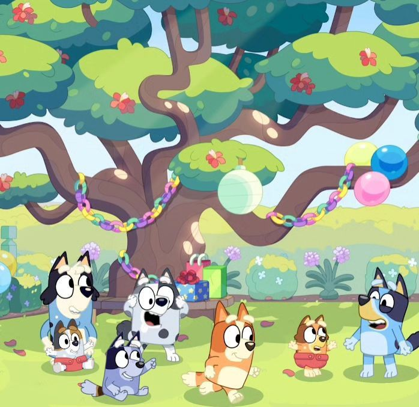

En bluey enseñan que los juegos ayudan a desarrollar la imaginación,
la creatividad y el trabajo en equipo.
En Bluey, los juegos son el corazón de la enseñanza: ayudan a los niños a desarrollar creatividad, empatía, resiliencia y habilidades
sociales, mientras fortalecen los lazos familiares. La serie muestra que jugar no es solo diversión, sino una herramienta poderosa para aprender
y crecer emocionalmente.
